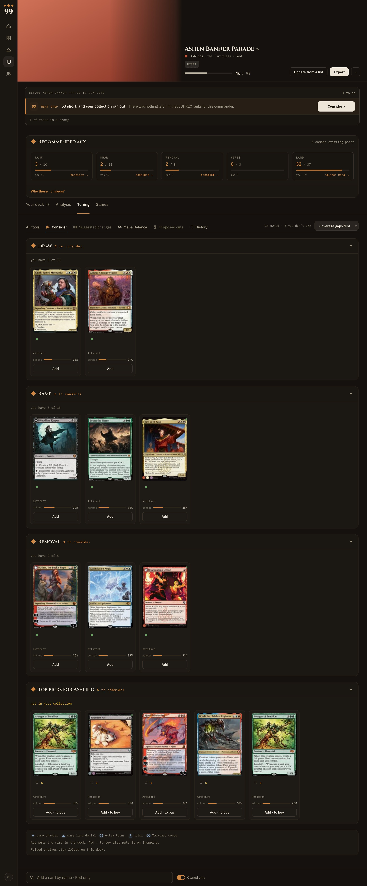
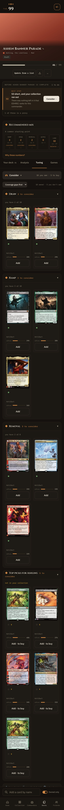
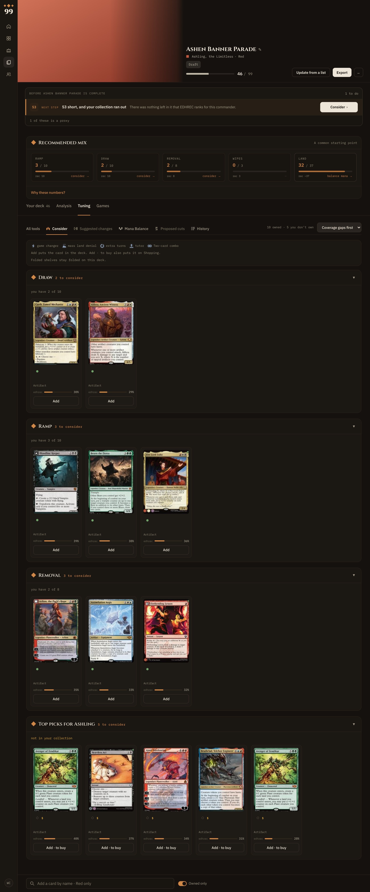
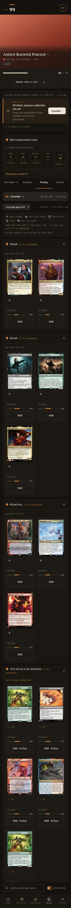

R5 Tuning › Consider · key back at the top
The one key for the panel moves from below the last shelf to above the first one, so the marks are learned before the first tile. Same box and the same two lines (Add, Folded shelves). Shelves are unchanged.
BEFORE · SHIPPED (KEY AT THE FOOT)


AFTER · R5 (KEY AT THE TOP)

